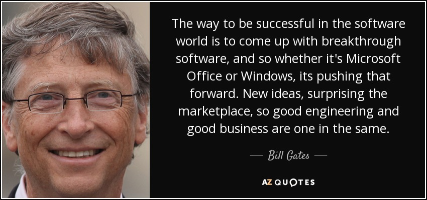

Bill Gates
An American business magnate, philanthropist, investor, and computer programmer

About:
Bill Gates is a technologist, business leader, and philanthropist. He grew up in Seattle, Washington, with an amazing and supportive family who encouraged his interest in computers at an early age. He dropped out of college to start Microsoft
with his childhood friend Paul Allen. He married Melinda French in 1994 and they have three children. Today, Bill and Melinda Gates co-chair the charitable foundation bearing their names and are working together to give their wealth back to
society.
Time line of Bill Gates's life so far:
- 1955 - Born in Seattle, Washington
- 1967 - Enrolled in the Lakeside School, a private preparatory school. First used computer.
- 1968 - Began programming with Paul Allen in the computer center.
- 1973 - Graduated from Lakeside School, and was a National Merit Scholar. He scored 1590 out of 1600 on the SAT and enrolled at Harvard College.
- 1975 - Dropped out of Harvard. Started Micro-Soft with Paul Allen in Albuquerque, New Mexico.
- 1976 - Changed company name to Microsoft.
- 1979 - The company moved from Albuquerque to its new home in Bellevue, Washington.
- 1985 - Microsoft launched its first retail version of Microsoft Windows.
- 1995 - Windows 95 launched.
- 2000 - Assumed role of Chief Software Architect, as Steve Ballmer assumed role of Microsoft CEO. Bill and Melinda officially established the foundation.
- 2002 - The foundation completed efforts to help install 47,000 computers in 11,000 libraries in all 50 states. Ninety- five percent of libraries have computers with Internet access, up from 27 percent in 1996.
- 2006 - Bill helped launch TerraPower, a company that aims to provide the world with a more affordable, secure, and environmentally friendly form of nuclear energy.
- 2008 - Left his daily job at Microsoft.
- 2010 - Bill and Melinda challenged the global health community to declare this the Decade of Vaccines. They pledged $10 billion over the next 10 years to help research, develop, and deliver vaccines for the world’s poorest
countries.
- 2013 - Bill helped launch a $5.5 billion effort to eradicate polio by 2018. India was certified polio-free by the World Health Organization, leaving only three countries that have never been free of the disease.
- 2014 - Stepped down as chairman. Remained on the board and began serving as technology advisor.
Admiration:
The way he forged his own path — from college drop-out to the richest man in the world — earns him respect and admiration in every country
Software innovation, like almost every other kind of innovation, requires the ability to collaborate and share ideas with other people, and to sit down and talk with customers and get their feedback and understand their needs.
Additional information about Mr.Bill Gates on BILLs also on his BLOG.